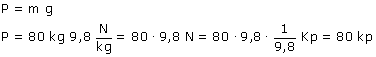

a) El peso de un cuerpo depende de su masa y del planeta donde de encuentre  En la Tierra el número que mide la masa en kg coincide con el número que mide el peso en kp (No es casualidad, se debe a que la equivalencia entre N y kp vale lo mismo que el factor g en la Tierra) Importante El hecho de que coincidan los valores numéricos no implica que sean lo mismo masa que peso |